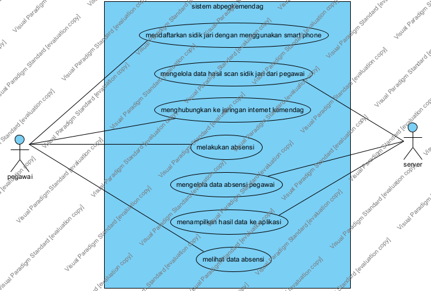

abpegkemendag
Project Link
Page URL
with Name
Use Case Diagram - Use Case Diagram1 abpedigkemendag
link
Jump to:
Please select a model element
sistem abpegkemendag : System
pegawai : Actor
server : Actor
melakukan absensi : Use Case
melihat data absensi : Use Case
menampilkan hasil data ke aplikasi : Use Case
mendaftarkan sidik jari dengan menggunakan smart phone : Use Case
mengelola data absensi pegawai : Use Case
mengelola data hasil scan sidik jari dari pegawai : Use Case
menghubungkan ke jaringan internet kemendag : Use Case

Model Elements
Name
Description
sistem abpegkemendag : System
pegawai : Actor
server : Actor
melakukan absensi : Use Case
melihat data absensi : Use Case
menampilkan hasil data ke aplikasi : Use Case
mendaftarkan sidik jari dengan menggunakan smart phone : Use Case
mengelola data absensi pegawai : Use Case
mengelola data hasil scan sidik jari dari pegawai : Use Case
menghubungkan ke jaringan internet kemendag : Use Case
abpegkemendag